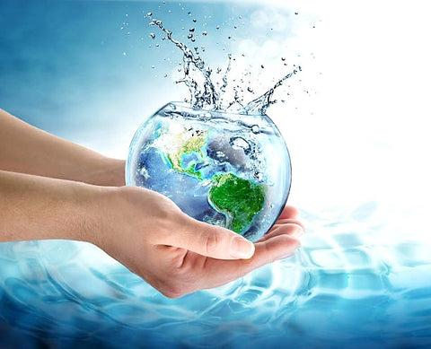
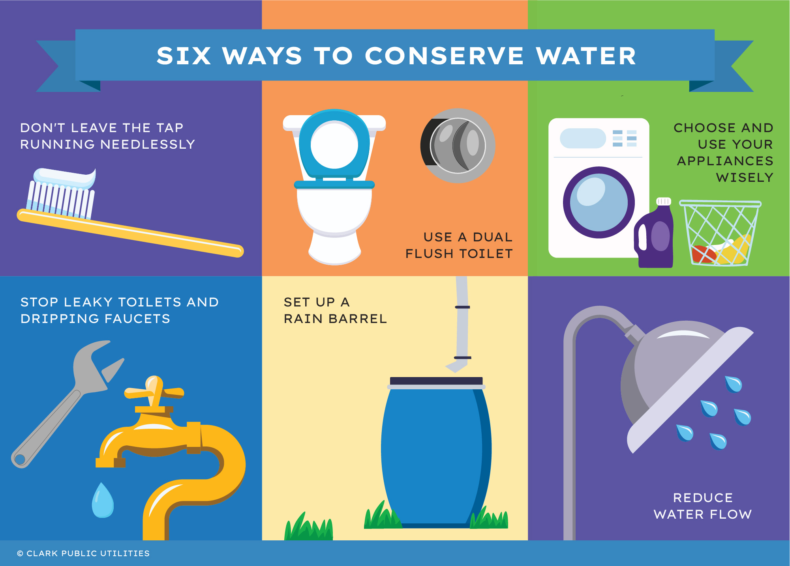

Water is the most essential resource for life on Earth. Every living being, from humans to animals and plants, depends on water for survival. Without water, life would not exist. It plays a crucial role in daily activities like drinking, cooking, farming, and industry. However, water scarcity and pollution are becoming major global concerns. Conserving water and using it wisely is essential for a sustainable future.

Every drop counts!
Here are some ways we can save water in a practical and effective way:
In the Home
Fix leaks – A dripping faucet can waste gallons per day.
Install low-flow showerheads – They use less water without sacrificing pressure.
Turn off the tap while brushing teeth or shaving.
Take shorter showers – Aim for 5 minutes or less.
Install dual-flush or low-flow toilets.
Use a bucket to catch water while waiting for the shower to warm up, then use it for plants or cleaning.
Only run dishwashers when full.
Don’t let the tap run while washing dishes – Fill the sink or a basin instead.
Use a bowl to wash fruits and vegetables, and reuse the water for plants.
Install aerators on faucets to reduce flow.
Wash full loads only.
Upgrade to water-efficient washers – Look for ENERGY STAR models.
Reuse lightly worn clothes instead of washing after every use.
Outdoors
Water early in the morning or late evening to reduce evaporation.
Use a broom instead of a hose to clean driveways and sidewalks.
Choose drought-tolerant native plants.
Mulch around plants to retain soil moisture.
Install drip irrigation systems instead of sprinklers.
Collect rainwater using barrels and use it for watering plants.
Adjust sprinklers to avoid watering pavement.
General Habits
Check for hidden leaks in toilets, pipes, and appliances regularly.
Educate your household about water conservation.
Use a timer for garden watering and showers.
Install water-efficient fixtures and appliances throughout the house.
Keep cold water in the fridge so you don't run the tap waiting for it to cool.

"Clean water, sanitation, and hygiene are the most basic needs for human health and dignity." – United Nations